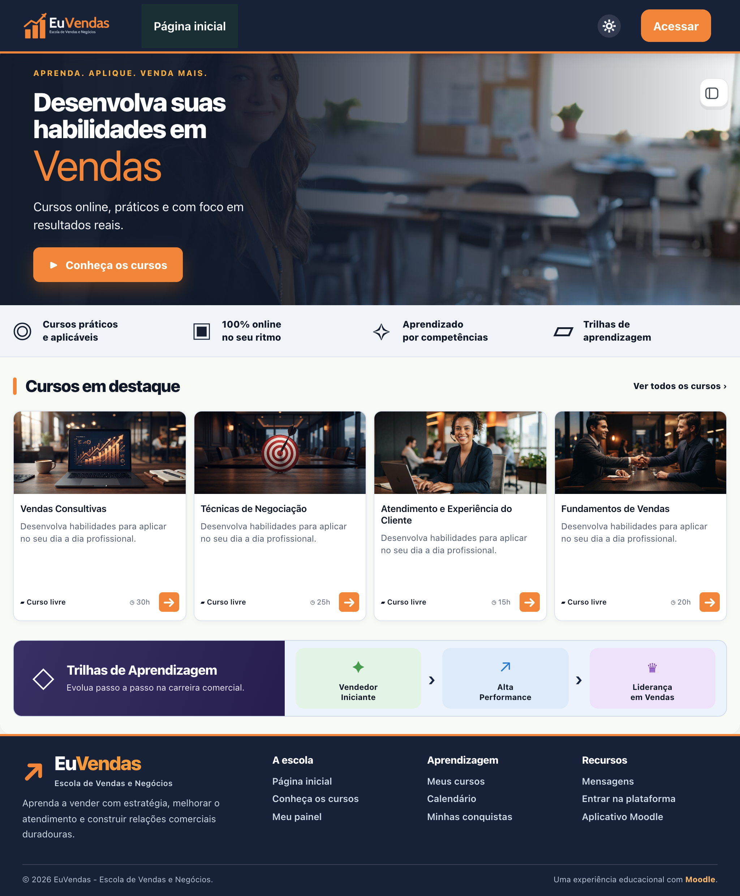

01
Educational institutions
A platform ready for courses, classes, and teams.
Hosting, maintenance, and specialized support so you can focus on what matters most: teaching.
Working with Moodle since 2006
Infrastructure should fit the needs of those teaching and learning.
A platform ready for courses, classes, and teams.
Training, professional development, and team progress tracking.
A foundation for publishing and developing your courses.
A well-maintained Moodle relies on configuration, maintenance, and technical decisions. Hosting connects these to your daily operations.
Capacity planning and configuration based on concurrent traffic, storage, and how your platform is used.
Backup procedures and operational safeguards, with frequency, retention, and processes defined in the quote.
Technical oversight and compatibility checks for themes, plugins, and integrations before making changes.
Specialized support that considers the whole Moodle platform, connecting application behavior with the infrastructure.
See how the same platform can have entirely different visual identities for corporate training, medical education, football, and other fields.

Professional football scouting education with its own visual identity, bringing observation, analysis, and learning together in one platform.
View the design and explore the project →
A specialized design for a regenerative orthopedics and interventional medicine program, connecting scientific knowledge with clinical practice.
View the design and explore the project →
Nine Moodle platforms with distinct visual identities, all developed for projects belonging to one company: Grupo Eu Aprendiz.
View the design and explore the project →Choose based on how many students are online at the same time. All plans allow unlimited registered users and courses.
Installation, migration, and a custom design at no extra charge, within the agreed scope.
To get your project moving.
More room for your operations to grow.
For a platform with more traffic.
Infrastructure for larger projects.
Concurrent students are those accessing the platform at the same time. This limit does not restrict the total number of registered users.
Need more storage? In the plans above, each additional 10 GB costs R$ 10.00/month.
A custom quote for thousands of concurrent students, up to 5 TB of storage, and resources sized for your project. Installation, migration, and a new custom design are included.
Your quote starts with your situation, whether you're launching your first course or preparing your platform's next stage.
Infrastructure ready for your project to launch, with installation, configuration, and technical guidance.
Change takes care. Courses, students, activities, and integrations are part of your daily operations.
Sizing accounts for concurrent traffic, files, integrations, and your platform's real workload.
Courses, students, activities, and integrations are part of your operations. Migration starts with understanding the platform and agreeing on each stage.
I'm Eduardo Kraus, a teacher, developer, and Moodle specialist since 2006. I know the platform inside out: code, plugins, customization, and the infrastructure that keeps it running.
That experience helps me see the whole picture and make decisions that work for the people using, maintaining, and expanding Moodle.
Learn more about my work →Don't see your situation here? Let's talk about it.
Yes. Every plan includes Moodle installation, migration of an existing environment, and a new custom design at no extra charge.
Yes. Migration is free in every plan. We first assess versions, plugins, files, and integrations, then plan the transfer, validation, and maintenance window with you.
Plans start at R$ 385/month for 50 concurrent students and 40 GB of storage, with options for 100, 200, and 500 concurrent students, plus custom plans.
Yes. Moodle can use your institution's domain, and every plan includes a new custom design at no extra charge.
Backup frequency, retention period, restoration procedures, and update support are defined in the agreed scope. Version changes require reviewing themes and plugins in use.
Plugin development, maintenance, and integrations can be considered as part of the project. If included, the requirements and scope are described in the quote.
Tell me about your platform and what you need. It starts with understanding your operations.
Request a quote